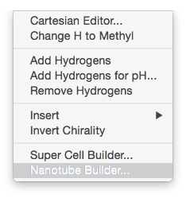
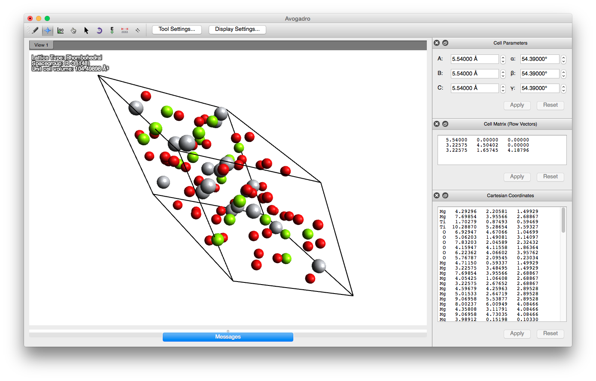

Other Programs and Avogadro Extensions...
Space Group Generator
RandSpg is an algorithm developed by Patrick Avery. RandSpg generates random crystals of specific spacegroups and allows the user to specify a lot of information such as minimum interatomic distances, volume constraints, etc.The source code is available under the "New" BSD open source license and may be viewed at its Github repository.
RandSpg
If you encounter any bugs, please email psavery@buffalo.edu
RandomDock
RandomDock is included with XtalOpt an open–source evolutionary algorithm for crystal structure prediction, which can be downloaded here. The RandomDock extension is built by configuring XtalOpt with the
-DENABLE_RandomDock=1
flag during the cmake step of the installation. RandomDock generates a user–specified number of geometries which are sent out for relaxation by an external quantum chemical program. These are generated as follows:
- The substrate (template) and matrix (monomer) molecules can be drawn and pre–optimized by Avogadro or imported into Avogadro from a file using one of the common chemical structure formats. The number of matrix and substrate molecules are specified in the GUI. Either isolated molecules or complexes (dimers, trimers etc.) may be employed.
- Conformers of the substrate and/or matrix molecules are generated and pre–optimized using one of the force field implementations in the OpenBabel library. Either an exhaustive search can be performed, or a specified number of conformers may be created. The latter option does not guarantee that the most stable conformers will be found, since the conformergenerating algorithm stops once the specified number has been reached.
- Conformers of the matrix and/or substrate molecules are chosen such that the probability p_{i} of selecting a given individual is calculated from its energy E_{i} (evaluated via the specified force field) as:
\centering p_{i} = N(1 - \frac{E_{i} - E_{min}}{E_{max} - E_{min}})
- The matrix molecules are placed randomly about the substrate subject to user–specified distance constraints. A range for the interatomic distances (IAD) between all atoms in the matrix and substrate molecules may be specified. This ensures that all atoms between any templatematrix pair are separated by at least the minimum IAD (in angstroms), but at least one pair, from each matrix molecule, must be closer than the IAD maximum value.
Nanotube Builder
Avogadro contains a nanotube builder extension (shown on the right). The extension generates a single-wall carbon nanotube from an (n,m) specification. More info can be found here.
 A 20 angstrom, hydrogen capped (6,6) nanotube.
A 20 angstrom, hydrogen capped (6,6) nanotube.
Crystallography Extension
While Avogadro has provided basic crystallography tools through its existing Unit Cell and Super Cell extensions (which enabled users to modify unit cell parameters and build supercells, respectively), advanced tasks such as space group detection and primitive cell reduction have required closed source (and often expensive!) tools such as Materials Studio or ISOTROPY/FINDSYM.
Screenshot of Avogadro visualizing a MgTiO3 cell and displaying the crystallographic properties.

The docking editors. The Cell Matrix editor shows the on-the-fly input checking. As soon as an invalid character is entered (note the extra 0's in the final row), the text turns red.
So what new functionality does the extension add? The short answer: Everything I could think of. The long answer? Well, that needs a list or two:
- Customizable docking editors allow direct editing of:
- Cell parameters a, b, c, alpha, beta, and gamma
- The cell matrix, as either row or column vectors
- The atomic coordinates, in either cartesian or fractional units
- Customizable unit display:
- All lengths (parameters, cell matrix, cartesian coordinates) can be displayed in Angstrom, Bohr, nanometer, or picometer
- All angles can be displayed in degree or radian
- Immediate feedback on invalid entry: Text turns red when an invalid entry is made
- Plain text entry -- perfect for copy/pasting to/from input/output files.

Some of the new tools in the Crystallography menu
- Some of the new tools in the Crystallography menu:
- Add / Remove unit cell Symmetry tools:
- Detect spacegroup
- Manually set spacegroup
- Symmetrize cell and coordinates to detected space group
- Fill unit cell using a few atoms and the current space group's symmetry operations
- Structure reductions:
- Reduce to primitive cell
- Reduce to Niggli cell
- Option to preserve either cartesian or fractional coordinates when the cell is modified
- Display fractionalization matrix
- Import POSCAR style data from clipboard (more formats to come)
- Copy POSCAR to clipboard
- Translate ("wrap") atoms to lie inside unit cell
- Rotate to standard orientation (i.e. A along x, B in x,y plane)
- Scale cell to a specified volume (isotropic scaling)
- Add / Remove unit cell Symmetry tools:
- On-screen display of crystallographic properties:
- Lattice type
- Space group
- Cell Volume
Many of these great features would not have been possible without the contributions of other open-source programmers, namely Atsushi Togo for spglib, a BSD-licensed library which provides the awesome symmetry tools, and Jean Bréfort for contributing the space group transform database and unit cell implementation and tools in Open Babel.